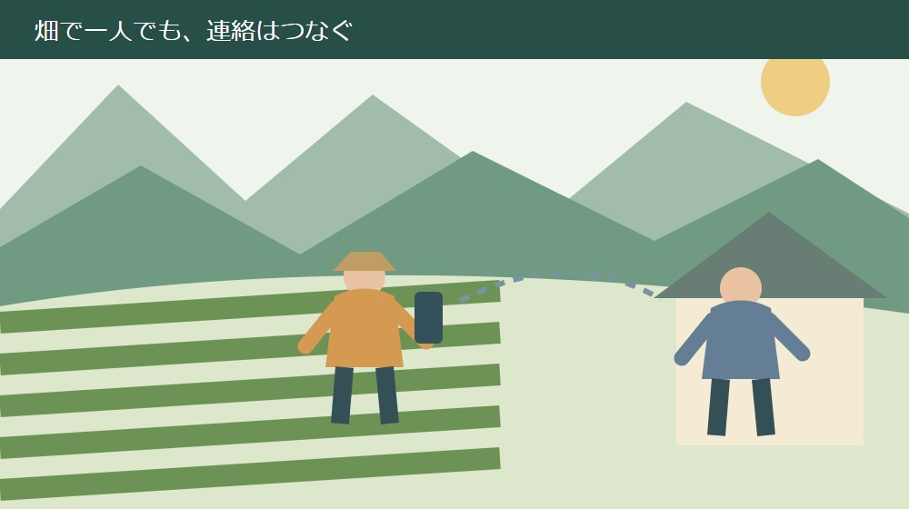
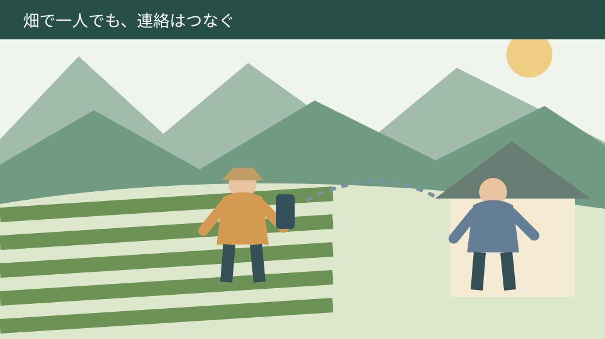
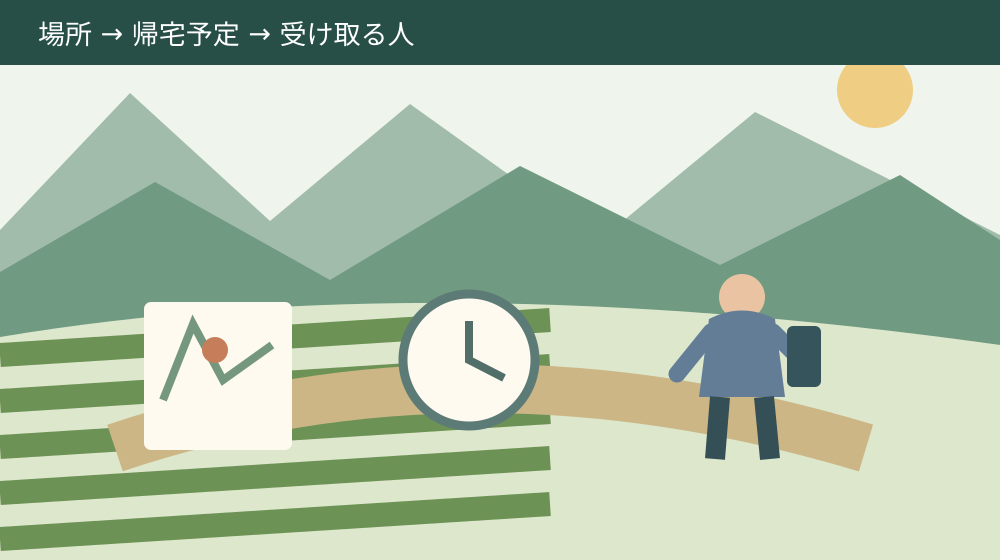

農作業の一人作業対策｜森町で9月の連絡を決める
／ 農地・山林・茶畑

Q. 森町の畑へ一人で行く家族に、何を聞いておけばよい？
一人での農作業を避ける工夫を優先し、作業場所・帰宅予定・連絡を受ける人を決めます。国の2026年度の声かけ期間は7月1日～9月30日です。連絡だけで安全を保証できません。今日は場所と帰宅予定を共有し、返事がない場合の確認先まで家族で合わせます。
畑を守る人に、連絡の仕事まで一人で背負わせない
森町の田畑や茶園を気にかけている家族にとって、離れた場所から「無理をしないで」と伝えるだけでは落ち着かない日があります。草や作物を前に、現地で動いている人がいる。その手間を認めたうえで、家族が受け持てる連絡の仕事を考えます。
農作業の一人作業対策は、まず単独での作業を避ける工夫からです。人を頼む、作業日を変える、危険のある仕事を自分だけで行わない。連絡表を作ることを、一人で作業してよいという許可にしてはいけません。連絡は危険を取り除く手段の代わりにはなりません。
私は大石浩之（磐田市／不動産業）です。この記事では医療上の判断や農機の操作を教えるのではなく、家族が作業場所と帰宅予定を共有する段取りを考えます。町や国の確認済み情報と、私が提案する家族内の連絡方法を分けて書きます。
今日は、作業場所と帰宅予定を本人から家族へ伝え、家族が受け取ったと返すところまでを一組にします。送った人が安心しても、受け手が仕事中で見られなければ空白が残ります。畑へ行く人だけを、連絡の担当者にしないことです。
事実整理｜2026年は9月30日まで声かけ期間
農林水産省近畿農政局の「農作業安全対策について」には、令和8年度の推進方針欄があります。2026年9月17日の確認時点で、夏の熱中症対策声かけ期間を7月1日～9月30日に新設したと記載されています。ページ自体の公表日は表示されていません。
同欄は夏の一人作業への注意を掲げています。8月が終わったら声かけも終わる、という区切りではなく、9月30日までが明記されている点に目を留めたいと思います。期間の日付は、森町の特定の日の気温や、作業してよい条件を示す数字ではありません。
近畿農政局のページは、国の農作業安全に関する方針を確認する資料として使います。森町が独自に農家を巡回する、登録すれば電話が来る、といった事業の根拠にはできません。町で何が実施されているかを、国の期間の説明から推測しないことです。
森町の2026年7月16日更新の熱中症案内は、暑さを避けること、周囲からの声かけ、熱中症警戒アラートの確認などを挙げています。家族の連絡は町の予防情報と併せて考えます。連絡時刻を決めたから、暑さや体調を無視してよいわけではありません。

森町の畑を、離れた家族が探せる場所にする
作業場所の共有では、本人と家族が同じ畑を思い浮かべているかを確かめます。「いつもの畑」「山の茶園」という言葉は、毎日行く人には通じても、町外で暮らす家族には分からないことがあります。まず地図を一緒に見て、作業する場所を示します。
地図へ示すのは、畑そのものと入る道の両方です。入口、車を置く場所、道路から見える目印が分かれば、電話で説明しやすくなります。私が勧めるのは、家族だけの通称に加えて、第三者にも説明できる情報を一つ添えることです。
森町の中でも、その日の作業場所が変われば連絡内容は変わります。田んぼでの作業を終え、別の茶園へ移るなら、最初の地図のままにしません。移動する前に安全な場所で止まり、次の場所と帰宅予定の変更を伝える約束にします。
茶園の場所や管理担当の整理は、茶園を引き継いだときの継続条件の記事にもつながります。土地の記録を持っていても、今日どこで作業しているかは別の情報です。長く使う地図と、その日の予定を分けて残します。
良い点｜声かけを、家族が引き受ける仕事に変えられる
声かけ期間がある良い点は、農作業を本人だけの責任として扱わず、周囲が関わるきっかけを持てることだと私は考えます。畑へ一緒に行けない家族でも、場所を聞く、連絡を受ける、帰宅を確かめる役割は相談できます。
連絡を受ける人が明確になると、本人も誰に送ればよいか迷いません。家族全員のグループへ投稿しても、全員が「誰かが見ている」と考える可能性はあります。受け手を一人決め、受けられない日は交代する仕組みを、私は勧めます。
帰宅を確認できれば、その日の連絡をそこで閉じられます。仕事中の家族が何度も不安になって電話する負担と、作業者が毎回説明する負担の両方を減らす狙いです。確認の回数だけを増やすのではなく、何を伝えれば一区切りになるかをそろえます。
草刈りの依頼先や作業範囲を見直すことも、連絡と合わせて考えられます。実家の畑と空き地の草刈りを誰に頼むかの記事では、担い手と費用を扱っています。家族の連絡を整えることと、危険や負担のある作業を減らすことを一緒に考えます。
注文したい点｜電話を持っているだけでは、空白は埋まらない
携帯電話を持っていても、電池が切れていたり、連絡を受ける側が見られなかったりすれば、確認はつながりません。私は、道具を渡して安心するところで止めたくありません。出発前に電話が使えるかと、今日の受け手が誰かを確かめる仕事が残ります。
位置情報の共有にも限界があります。表示されている地点が更新された時刻と、本人が無事かどうかは別です。位置が分かっているから心配がないとは判断しません。本人が同意した範囲で使い、電話や帰宅の確認を補う情報として扱います。
連絡を増やしすぎると、受け手にも作業者にも負担が出ます。何分間隔なら安全かを、この記事で一律に決めることはできません。作業の危険、気象条件、体調を踏まえ、単独作業そのものを避ける判断を先に置きます。定時連絡を理由に作業を続けないことです。
「帰宅予定を過ぎたら何分待つ」という共通の待機時間も示しません。事故が疑われるときと、本人から予定変更の連絡があったときでは状況が違います。危険が疑われるときは返信を漫然と待たず、分かっている状況を伝えて助けを求めます。
私にも、連絡を気にかけることと本人の負担になることの境目には迷いがあります。監視されていると感じれば、続けにくいはずです。だから私は、家族が勝手に決めるより、「帰ったと分かれば安心できる」と目的を伝え、本人と方法を選ぶことを勧めます。

対案・結論｜場所と帰宅予定を、受け手の返事まで共有する
今日送る連絡は、場所、開始予定、帰宅予定、連絡先の四つを短くまとめます。家族が返事をするところまでを一組にするのが私の提案です。入力が苦手なら電話でも紙でも構いません。本人に新しいアプリを覚えてもらうことを、最初の条件にはしません。
文面の例は、「今日は地図で示した畑で作業する。帰宅予定は10時。終わったら電話する」です。これは連絡文の例で、10時までなら暑くないという意味ではありません。実際の時刻は、その日の作業計画に合わせて本人と家族が決めます。
受け手は「場所と帰宅予定を確認した。今日は私が連絡を受ける」と返します。受けられない場合はその場で伝え、ほかの人へ交代できるか相談します。受け手が決まらないことが分かったら、単独作業を避ける方法や日程の変更を改めて考えます。
作業途中で予定が変わるときは、安全に作業を止めてから連絡します。機械の操作中や移動しながら、電話を取る約束にはしません。田畑から別の場所へ移る場合、帰宅が遅くなる場合を、出発前に「変更を伝える場面」として本人と確認します。
帰宅連絡は、「畑の作業が終わった」と「家へ戻った」を必要に応じて分けます。作業が終わっても、片付けや移動が残るためです。家族が確認したいのが帰宅なら、どの言葉でその日の連絡を終えるかを決め、無事を推測する余地を減らします。
最初から完璧な記録表を作る必要はありません。今日は本人と家族が同じ場所と帰宅予定を言えることが出発点です。紙に書くなら玄関など本人が出発前に見られる場所へ置き、家族へ送る情報には不要な口座情報や家の鍵の場所を含めません。
連絡が取れないときの順番を、出発前に決める
連絡が取れない場合の確認先は、本人の携帯、本人が戻る家、現地事情を知る人など、使えるものを事前に並べます。誰かの善意を前提に名前を載せるのではなく、その人へ頼んでよい範囲を本人と家族が相談しておきます。
帰宅予定を過ぎて連絡が来ないときは、受け手が確認を始めます。電話をしてもつながらなければ、あらかじめ決めた現地事情を知る連絡先へ確認を進めます。別の家族に引き継ぐなら、最後に話した時刻と確認したことを伝え、同じ電話を繰り返すだけにしません。
危険が疑われるときは、119番へ作業場所と分かっている状況を伝えます。離れた地域から電話している場合は、救急が必要な場所が静岡県周智郡森町であることを最初に伝えます。家族の想像と、電話で確認できた事実を分け、通報先の指示に従います。
現地を見に行くことになっても、家族だけで危険な斜面や農機のそばへ入り込まないようにします。助けに向かった人が危険にさらされれば、連絡の目的に反します。位置、道の状況、見えていることを伝え、専門の助けにつなぐための情報として使います。
暑さと体調の確認は、連絡とは別に残す
森町の熱中症案内は、自分で水が飲めない、意識がない場合は救急車を呼ぶよう示しています。呼びかけへの返事がおかしい状態なども、重い症状の例です。家族の連絡表で病状を判定せず、こうした状態ではためらわず救急につなぎます。
町の予防案内を見て、暑さを避けることやその日の熱中症警戒アラートを確認します。家族は「今日はどこへ行くか」と一緒に、「そもそも今日その作業をするか」を話せます。予定を伝えたからやり切らなければならない、という約束にはしません。
森町はクーリングシェルターも案内しています。2026年7月27日更新ページでは、熱中症特別警戒アラートが発表されたときの開所や、施設ごとの利用条件が示されています。公共施設の案内期間は4月22日～10月28日です。期間中なら常時どこでも利用できるという意味ではありません。
私は、暑さをしのぐ場所を地図で知っておくことには意味があると考えます。ただし、体調が悪い人を遠い施設まで自分で移動させるための案内にはしません。農地からの距離や開所状況は別に確認し、具合が悪いときの救急対応と休憩場所探しを混同しないことです。
農機の安全と、家族の連絡を取り替えない
農機を使う日は、連絡がつくことと機械の安全対策を別々に確認します。家族と電話できても、転倒や転落の危険が消えるわけではありません。作業方法や装備、使用説明に沿った点検などは、使用する機械と現場に応じた確認が必要です。
トラクターについては、2027年のシートベルトに関する記事で製造時期などの条件を分けています。ここでは制度の説明を重ねず、連絡があるから装備の確認を省けるわけではない、という関係を押さえます。
受け手が不安だからという理由で、作業中に何度も電話をかける約束も避けたいと私は考えます。機械を止め、安全を確保した場面で連絡する。そのためにも、作業者がどんな仕事をするのかを出発前に聞き、連絡のための新しい危険を増やさないようにします。
家族に残す記録｜今日の受け手と、次回の直しどころ
家族に残す連絡記録には、場所、予定、今日の受け手、予備の連絡先を置きます。畑の地図は毎日作り直さず、当日の場所を指せる形にします。共有する範囲は本人と決め、生活の動きを必要以上に広く公開しないようにします。
予定変更が伝わらなかった日には、誰が悪かったかより、どこで連絡が切れたかを見直します。受け手が不在だったのか、場所の呼び名が違ったのか、帰宅連絡を作業終了と取り違えたのか。原因が具体的なら、次回の約束を一つ直せます。
現地へ行けない家族も、地図を整理したり、予備の連絡先を確認したりできます。担い手の負担を認めることは、声をかけて終わることではないと私は思います。今日は家族の側が受け手を引き受ける。その役割を一つ決めるだけでも、本人へ渡す宿題を減らせます。
大石の視点｜送信より、誰が帰宅を確かめるか
私は、制度の掛け声より、誰がいつ動けるかで考えます。農作業の連絡も、送信した記録が残れば終わりではありません。誰が受け取り、誰が帰宅を確かめるかまで決める。畑へ出る人に「連絡して」と言うなら、家族の側も受け持つ仕事を決めるべきです。
森町の田畑を続ける人に、家族の安心のための仕事だけを増やしたくはありません。私は、短い一文と返事で続けられる形を勧めます。それでも一人作業の危険を取り除けないなら、連絡を細かくするより、作業を頼む人や日を変える話へ戻ります。
土地の場所が分かることは、相続や管理だけの話ではありません。今日どこで家族が動いているかを伝える土台にもなります。所有地の記録を日々の安全確認へつなげるところに、不動産に関わる私が勧められる、小さく具体的な一歩があると考えています。
まとめ｜9月17日の作業場所と帰宅予定から
2026年度の声かけ期間は9月30日までです。森町の田畑や茶園で一人になる時間がある家族には、単独作業を避ける工夫を優先し、その日の場所と帰宅予定を共有します。国の期間が終わっても、暑さや作業の危険が自動でなくなるわけではありません。
今日できるのは、作業場所と帰宅予定を伝え、受け手が返事をすることです。連絡がない場合の確認先も一緒に決めます。制度や施設の情報は変わるため最新の公式案内を確認し、健康状態の個別判断は医療機関へ。緊急時は家族内の連絡だけで抱えず、救急につなぎます。
よくある質問
農作業の声かけ期間は2026年のいつですか？
農林水産省近畿農政局が掲載する令和8年度推進方針欄では、夏の熱中症対策声かけ期間を2026年7月1日～9月30日に新設しています。森町独自の巡回や通報サービスを示す資料ではありません。9月30日で安全確認を終える意味でもなく、その日の暑さや体調に応じて作業方法と家族の連絡を見直します。
一人で畑へ行くとき、家族へ何を伝えますか？
単独作業を避ける工夫を優先したうえで、作業場所、始める時刻、帰宅予定、使う連絡先を受け手と確認します。畑の通称だけで相手が場所を理解できなければ、地図や入口の目印を添えます。予定が変わるときと帰宅したときも連絡します。携帯電話の所持や位置共有だけで安全を保証することはできません。
帰宅予定を過ぎても連絡が来ない場合は？
あらかじめ決めた受け手が本人へ電話し、連絡が取れなければ現地事情を知る連絡先へ確認を進めます。危険が疑われる場合は漫然と待たず、119番へ分かっている場所と状況を伝えます。意識がない、自分で水が飲めないなどは救急車を呼ぶ状態です。家族だけで危険な斜面や機械のそばへ入り込まないようにします。

参考にした公式情報
- 農林水産省近畿農政局「農作業安全対策について」令和8年度推進方針欄・ページ公表日表示なし（2026年9月17日確認）
- 森町「熱中症に注意しましょう！！」2026年7月16日更新（2026年9月17日確認）
- 森町「クーリングシェルターの設置について」2026年7月27日更新（2026年9月17日確認）
最終確認日：2026-09-17。計画・制度・開催状況は変更される場合があります。最新情報は公式窓口へ、個別の法律・登記・保存上の判断は担当機関や専門家へ確認してください。